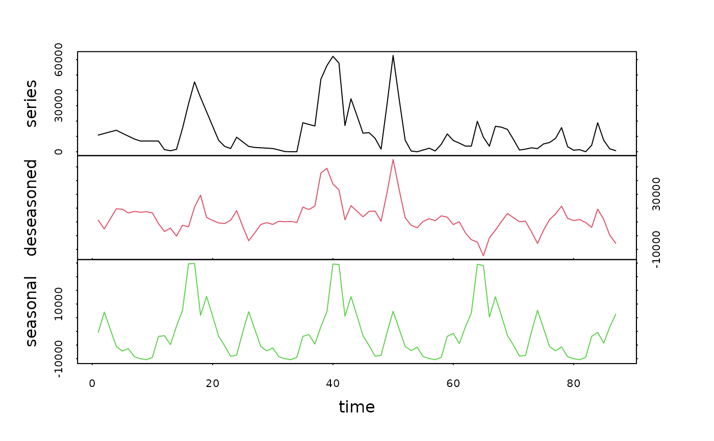
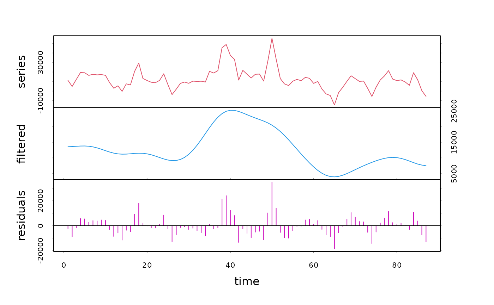
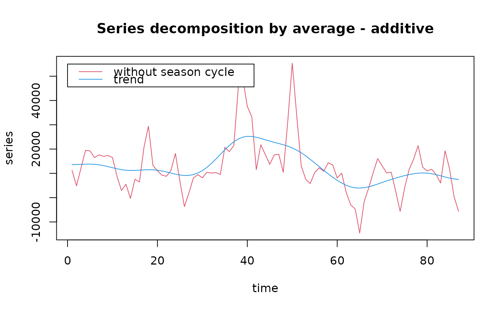

Decomposition of one or several regular time series using various methods
tsd.RdUse a decomposition method to split the series into two or more components. Decomposition methods are either series filtering/smoothing (difference, average, median, evf), deseasoning (loess) or model-based decomposition (reg, i.e., regression).
tsd(x, specs=NULL, method="loess",
type=if (method == "census") "multiplicative" else "additive",
lag=1, axes=1:5, order=1, times=1, sides=2, ends="fill", weights=NULL,
s.window=NULL, s.degree=0, t.window=NULL, t.degree=2, robust=FALSE,
trend=FALSE, xreg=NULL)
# S3 method for class 'tsd'
print(x, ...)
# S3 method for class 'tsd'
summary(object, ...)
# S3 method for class 'summary.tsd'
print(x, ...)
# S3 method for class 'tsd'
plot(x, series=1, stack=TRUE, resid=TRUE, col=par("col"),
lty=par("lty"), labels=dimnames(X)[[2]], leg=TRUE, lpos=c(0, 0), xlab="time",
ylab="series", main=paste("Series decomposition by", x$specs$method, "-",
x$specs$type), ...)
# S3 method for class 'tsd'
extract(e, n, series=NULL, components=NULL, ...)
# S3 method for class 'tsd'
specs(x, ...)
# S3 method for class 'specs.tsd'
print(x, ...)Arguments
- x
an univariate or multivariate regular time series ('ts' object) to be decomposed for
tsd(), or a 'tsd' object for the methods- specs
specifications are collected from a 'tsd' object, using the
specsmethod. This allows for reusing parameters issued from a previous similar analysis- method
the method to use to decompose the time series. Currently, possible values are:
"diff","average","median","evf","reg","loess"(by default) or"census". The corresponding functiondecXXXX()is applied to each of the series inx- type
the type of model to use: either
"additive"(by default) or"multiplicative". In the additive model, all components must be added to reconstruct the initial series. In the multiplicative model, they must be multiplied (one components has the same unit as the original series, and the other ones are dimensionless multiplicative factors)- lag
The lag between the two observations used to calculate differences. By default,
lag=1- axes
the number of axes to show in the plot
- order
(1) for the method 'difference': the order of the difference corresponds to the number of times it is applied, by default
order=1, (2) for the method 'average': the order of the moving average (the window of the average being 2*order+1), centered around the current observation or at left of this observation depending upon the value of thesidesargument. Weights are the same for all observations within the window. However, if the argumentweightsis provided, it supersedesorder. One can also useorder="periodic". In this case, a deseasoning filter is calculated according to the value offrequency- times
The number of times to apply the method (by default, once)
- sides
If 2 (by default), the window is centered around the current observation. If 1, the window is at left of the current observation (including it)
- ends
either "NAs" (fill first and last values that are not calculable with NAs), or "fill" (fill them with the average of observations before applying the filter, by default), or "circular" (use last values for estimating first ones and vice versa), or "periodic" (use entire periods of contiguous cycles, deseasoning)
- weights
a vector indicating weight to give to all observations in the window. This argument has the priority over
order- s.window
the width of the window used to extract the seasonal component. Use an odd value equal or just larger than the number of annual values (frequency of the time series). Use another value to extract other cycles (circadian, lunar,...). Using
s.window="periodic"ensures a correct value for extracting a seasonal component when the time scale is in years units- s.degree
the order of the polynome to use to extract the seasonal component (0 or 1). By default
s.degree=0- t.window
the width of the window to use to extract the general trend when
trend=TRUE(indicate an odd value). If this parameter is not provided, a reasonable value is first calculated, and then used by the algorithm.- t.degree
the order of the polynome to use to extract the general trend (0, 1 or 2). By default
t.degree=2- robust
if
TRUEa robust regression method is used. Otherwise (FALSE), by default, a classical least-square regression is used- trend
If
TRUEa trend is calculated (under R only). Otherwise, the series is decomposed into a seasonal component and residuals only- xreg
a second regular time series or a vector of the same length as
xwith corresponding values from the regression model- object
a 'tsd' object as returned by the function
tsd(), or any of thedecXXXX()functions- e
a 'tsd' object as returned by the function
tsd(), or any of thedecXXXX()functions- series
(1) for
plot(): the series to plot. By default,series=1, the first (or possibly unique) series in the 'tsd' object is plotted. (2) forextract: the name or the index of the series to extract. Ifseriesis provided, thennis ignored. By default,series=NULL. It is also possible to use negative indices. In this case, all series are extracted, except those ones- stack
graphs of each component are either stacked (
stack=TRUE, by default), or superposed on the same graphstack=FALSE- resid
do we have to plot also the "residuals" components (
resid=TRUE, by default) or not? Usually, in a stacked graph, you would like to plot the residuals, while in a superposed graph, you would not- col
color of the plot
- lty
line type for the plot
- labels
the labels to use for all y-axes in a stacked graph, or in the legend for a superposed graph. By default, the names of the components ("trend", "seasonal", "deseasoned", "filtered", "residuals", ...) are used
- leg
only used when
stack=FALSE. Do we plot a legend (leg=TRUEor not?- lpos
position of the upper-left corner of the legend box in the graph coordinates (x,y). By default,
leg=c(0,0)- xlab
the label of the x-axis
- ylab
the label of the y-axis
- main
the main title of the graph
- n
the number of series to extract (from series 1 to series n). By default, n equals the number of series in the 'tsd' object. If both
seriesandcomponentsarguments are NULL, all series and components are extracted and this method has exactly the same effect astseries- components
the names or indices of the components to extract. If
components=NULL(by default), then all components of the selected series are extracted. It is also possible to specify negative indices. In this case, all components are extracted, except those ones- ...
(1) for
tsd(): further arguments to pass to the correspondingdecXXXX()function. (2) forplot(): further graphical arguments, (3) unused for the other functions or methods
Details
To eliminate trend from a series, use "diff" or use "loess" with
trend=TRUE. If you know the shape of the trend (linear, exponential,
periodic, etc.), you can also use it with the "reg" (regression) method. To
eliminate or extract seasonal components, you can use "loess" if the seasonal
component is additive, or "census" if it is multiplicative. You can also use
"average" with argument order="periodic" and with either an additive or
a multiplicative model, although the later method is often less powerful than
"loess" or "census". If you want to extract a seasonal cycle with a given
shape (for instance, a sinusoid), use the "reg" method with a fitted
sinusoidal equation. If you want to identify levels in the series, use the
"median" method. To smooth the series, you can use preferably the "evf"
(eigenvector filtering), or the "average" methods, but you can also use
"median". To extract most important components from the series (no matter if
they are cycles -seasonal or not-, or long-term trends), you should use the
"evf" method. For more information on each of these methods, see online help
of the corresponding decXXXX() functions.
Value
An object of type 'tsd' is returned. It has methods print(),
summary(), plot(), extract() and specs().
References
Kendall, M., 1976. Time-series. Charles Griffin & Co Ltd. 197 pp.
Laloire, J.C., 1972. Méthodes du traitement des chroniques. Dunod, Paris, 194 pp.
Legendre, L. & P. Legendre, 1984. Ecologie numérique. Tome 2: La structure des données écologiques. Masson, Paris. 335 pp.
Malinvaud, E., 1978. Méthodes statistiques de l'économétrie. Dunod, Paris. 846 pp.
Philips, L. & R. Blomme, 1973. Analyse chronologique. Université Catholique de Louvain. Vander ed. 339 pp.
Note
If you have to decompose a single time series, you could also use the
corresponding decXXXX() function directly. In the case of a multivariate
regular time series, tsd() is more convenient because it decompose all
times series of a set at once!
Examples
data(releve)
# Regulate the series and extract them as a time series object
rel.regy <- regul(releve$Day, releve[3:8], xmin=6, n=87, units="daystoyears",
frequency=24, tol=2.2, methods="linear", datemin="21/03/1989",
dateformat="d/m/Y")
#> A 'tol' of 2.2 in 'days' is 0.00602327173169062 in 'years'
#> 'tol' was adjusted to 0.00595238095238083
#>
rel.ts <- tseries(rel.regy)
# Decompose all series in the set with the "loess" method
rel.dec <- tsd(rel.ts, method="loess", s.window=13, trend=FALSE)
rel.dec
#> Call:
#> tsd(x = rel.ts, method = "loess", s.window = 13, trend = FALSE)
#>
#> Series:
#> [1] "Astegla" "Chae" "Dity" "Gymn" "Melosul" "Navi"
#>
#>
#> Components for Astegla
#> [1] "deseasoned" "seasonal"
#>
#> Components for Chae
#> [1] "deseasoned" "seasonal"
#>
#> Components for Dity
#> [1] "deseasoned" "seasonal"
#>
#> Components for Gymn
#> [1] "deseasoned" "seasonal"
#>
#> Components for Melosul
#> [1] "deseasoned" "seasonal"
#>
#> Components for Navi
#> [1] "deseasoned" "seasonal"
plot(rel.dec, series=5, col=1:3) # An plot series 5

# Extract "deseasoned" components
rel.des <- extract(rel.dec, series=3:6, components="deseasoned")
rel.des[1:10,]
#> Dity.deseasoned Gymn.deseasoned Melosul.deseasoned Navi.deseasoned
#> [1,] -1856.450218 728.08507 11232.346 1263.204
#> [2,] -326.203029 925.87962 4857.551 2193.775
#> [3,] -5.397257 958.98367 12218.422 2141.072
#> [4,] 305.799403 725.75255 19485.965 2042.397
#> [5,] 510.738352 389.66511 19241.367 2524.486
#> [6,] 673.469410 46.52693 16485.644 2800.179
#> [7,] 666.811431 -205.96157 17601.801 2505.898
#> [8,] 668.430789 928.90368 16997.344 2273.421
#> [9,] 694.149206 -1949.28870 17367.641 1813.558
#> [10,] 696.564421 -1890.15039 16520.938 1603.852
# Further decompose these components with a moving average
rel.des.dec <- tsd(rel.des, method="average", order=2, times=10)
plot(rel.des.dec, series=3, col=c(2, 4, 6))

# In this case, a superposed graph is more appropriate:
plot(rel.des.dec, series=3, col=c(2,4), stack=FALSE, resid=FALSE,
labels=c("without season cycle", "trend"), lpos=c(0, 55000))

# Extract residuals from the latter decomposition
rel.res2 <- extract(rel.des.dec, components="residuals")